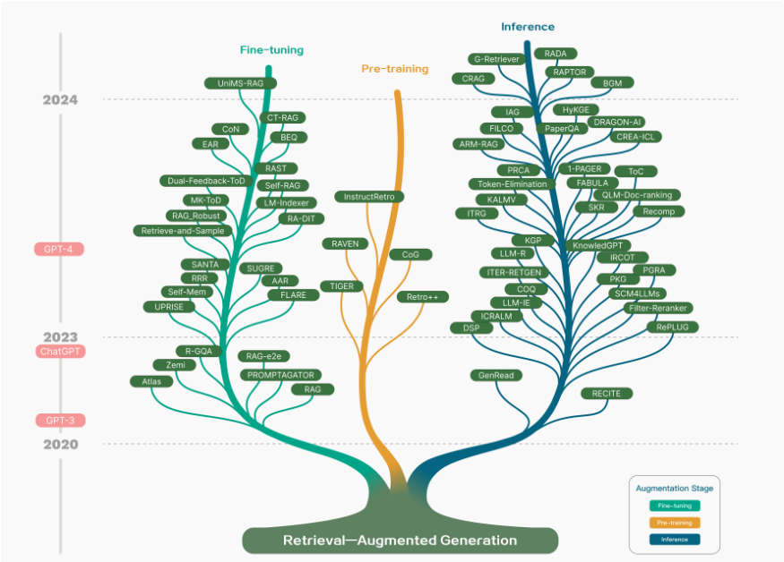
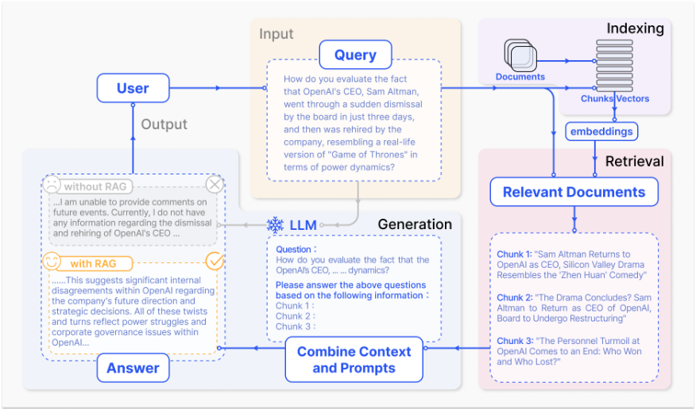
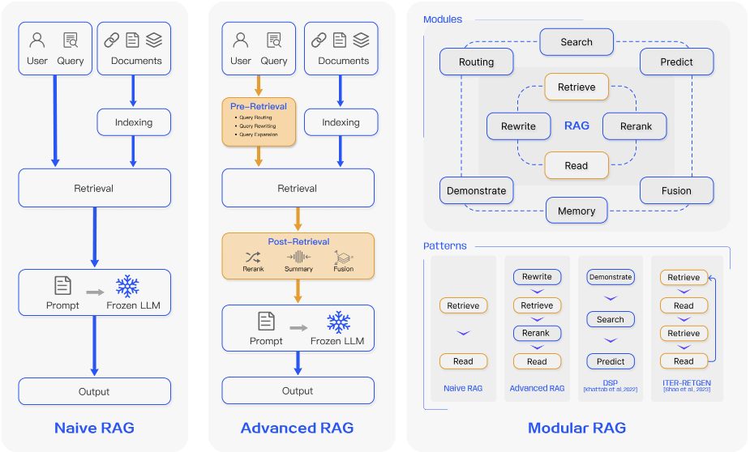
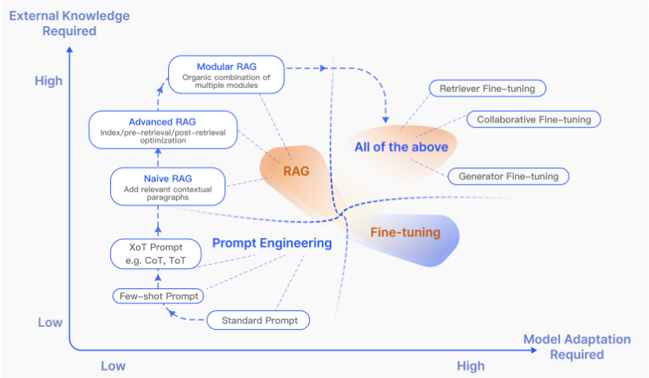
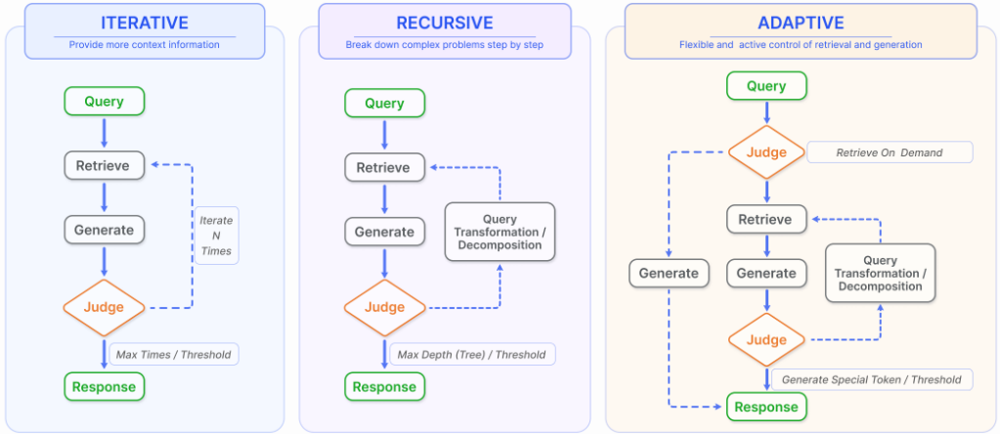
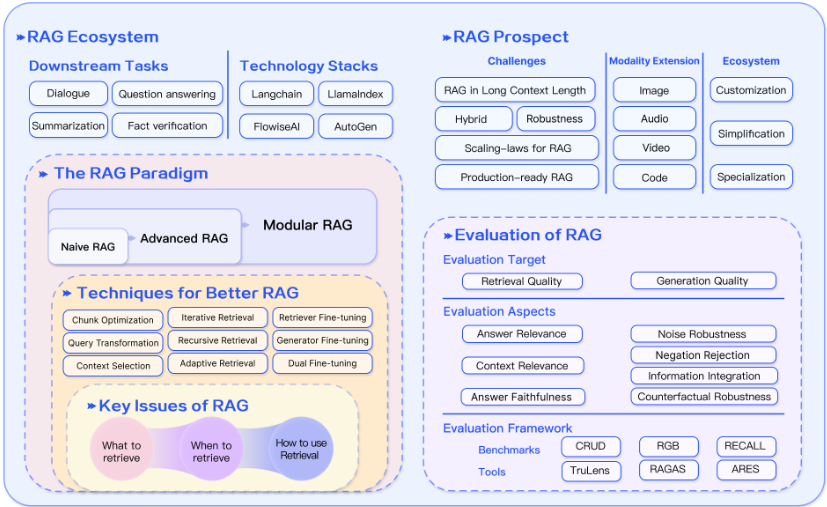

大语言模型的检索增强生成（RAG）综述
LLM 在知识密集型任务中存在幻觉、知识过时与推理过程不透明不可追溯等问题，本综述系统梳理了 RAG 通过引入外部知识库缓解这些缺陷的技术版图。论文从 100 余篇研究中归纳出 Naive RAG、Advanced RAG、Modular RAG 三个演进范式，并围绕 Retrieval、Generation、Augmentation 三大环节详述分块与索引优化、query 改写/扩展、混合检索、rerank、上下文压缩以及迭代/递归/自适应检索等关键技术。论文还对比了 RAG、Fine-tuning 与 Prompt Engineering 三条路线的适用边界，指出 RAG 在动态知识更新上占优且可与微调互补。评测方面提出检索与生成双目标，总结 context relevance、answer faithfulness、answer relevance 三项质量分数与噪声鲁棒性、负拒绝、信息整合、反事实鲁棒性四项能力，并盘点 RGB、RAGAS、ARES、TruLens 等基准与工具。结论认为长上下文时代 RAG 仍不可替代，未来方向包括鲁棒性、RAG+微调混合方法与生产级 RAG。
LLM 存在幻觉、知识过时、推理过程不透明不可追溯等问题，在领域特定与知识密集型任务上表现受限；同时 RAG 研究快速膨胀却缺乏系统性综合，尤其是已有研究'重方法、轻评测'，缺少对 RAG 评测任务、数据集、基准与方法的梳理。论文旨在系统化梳理 RAG 的范式演进、核心技术与评测体系。
综述方法：从 100 余篇 RAG 研究中归纳三大范式——Naive RAG（索引-检索-生成的 'Retrieve-Read' 流程）、Advanced RAG（检索前优化：数据粒度增强、索引结构优化、元数据、query rewriting/expansion；检索后优化：rerank 与上下文压缩）、Modular RAG（新增 Search、RAGFusion、Memory、Routing、Predict、Task Adapter 等模块，支持 Rewrite-Retrieve-Read、DSP、ITER-RETGEN、FLARE、Self-RAG 等灵活流程编排）。技术手段覆盖：检索源与粒度选择（文本/PDF/KG/LLM 生成内容）、分块策略（滑窗、Small2Big）与层级/KG 索引、查询扩展/转换/路由（Multi-Query、HyDE、Step-back Prompting、CoVe）、稀疏+稠密混合检索与 embedding 微调（LSR、PROMPTAGATOR、REPLUG）、rerank 与上下文压缩（LLMLingua、RECOMP）、LLM/retriever 协同微调对齐（RA-DIT）；并提出以检索质量与生成质量为双目标、含 3 项质量分数与 4 项必备能力的评测框架，盘点 RGB、RECALL、CRUD 基准与 RAGAS、ARES、TruLens 工具。
论文本身为综述，未报告作者自建的量化实验结果
正文引用的量化发现：Cuconasu 等人的分析显示，向上下文中加入无关文档反而可能使准确率意外提升超过 30%（'including irrelevant documents can unexpectedly increase accuracy by over 30%'），与直觉相反
正文引用的对比结论：[28] 在多个知识密集型任务上的评估表明 RAG 持续优于无监督 fine-tuning（对训练中已见与全新知识均成立），且 LLM 难以通过无监督微调学习新的事实知识（未给出具体数值）
正文提及的落地效果：淘宝的 BEQUE query 改写方法显著提升长尾 query 召回效果并带来 GMV 增长（未给出具体数值）
针对 RAG 研究快速膨胀但缺乏系统性综合的现状填补空白：将 RAG 演进归纳为 Naive/Advanced/Modular 三范式并绘制技术树；同时弥补已有工作'重方法、轻评测'的缺口，系统总结了 RAG 的下游任务、数据集、基准与评测方法；并从 Retrieval/Generation/Augmentation 三环节统一组织优化技术，讨论 RAG vs Fine-tuning vs Prompt Engineering 及 RAG vs Long Context 等工程选型问题。
相关度级别：high
命中能力域：3.1 上下文工程与记忆 | 3.2 提示工程 | 3.5 评测与可靠使用
理由：RAG 是 3.1 域（上下文组织与检索增强）的核心技术，而知识库问答正是团队的代表场景：论文对分块策略、元数据、层级/KG 索引、query 改写与扩展、混合检索、rerank、上下文压缩（含 'Lost in the middle' 问题）的系统梳理可直接指导团队 RAG 管线设计。第六节完整给出评测目标、3 项质量分数、4 项必备能力及 RAGAS/ARES/TruLens 等工具，直接命中 3.5 域的评测保障需求；鲁棒性与生产级 RAG 章节也对应可靠性关注。query 优化中的 HyDE、Step-back Prompting、CoVe、Multi-Query 属于提示技术模式，与 3.2 相关。此外，FLARE/Self-RAG 的自适应检索（LLM 自主决定何时调用检索）与 Agent 工具调用决策有呼应，但仅占少量篇幅，不构成对 3.3 的实质命中。
建议动作：深入精读并做内部分享
arXiv:2312.10997v5 [cs.CL] 27 Mar 2024
1
面向大语言模型的检索增强生成：综述
Yunfan Gao a、Yun Xiong b、Xinyu Gao b、Kangxiang Jia b、Jinliu Pan b、Yuxi Bi c、Yi Dai a、Jiawei Sun a、Meng Wang c 和 Haofen Wang a,c
a 同济大学上海自主智能无人系统科学中心 b 复旦大学计算机科学技术学院，上海市数据科学重点实验室 c 同济大学设计创意学院
摘要 - 大语言模型（Large Language Models, LLMs）展现出令人瞩目的能力，但同时也面临幻觉、知识过时以及推理过程不透明、不可追溯等挑战。检索增强生成（Retrieval-Augmented Generation, RAG）通过引入来自外部数据库的知识，已成为一种颇具前景的解决方案。这提升了生成结果的准确性与可信度，对于知识密集型任务尤为如此，并支持知识的持续更新以及领域特定信息的整合。RAG 将 LLM 的内在知识与外部数据库中庞大而动态的知识库协同融合。本综述论文详细考察了 RAG 范式的演进历程，涵盖朴素 RAG（Naive RAG）、高级 RAG（Advanced RAG）和模块化 RAG（Modular RAG）。论文细致剖析了 RAG 框架的三大基础，即检索、生成与增强技术，并着重介绍了嵌入在这些关键组件中的最先进技术，从而对 RAG 系统的进展提供了深入的理解。此外，本文还介绍了最新的评估框架与基准测试（benchmark）。最后，本文阐述了当前面临的挑战，并指出了未来研究与发展的前景方向 1。
索引术语 - 大语言模型、检索增强生成、自然语言处理、信息检索
大语言模型（LLMs）已取得显著成功，但它们仍面临重大局限，尤其是在特定领域或知识密集型任务中 [1]，特别是在处理超出其训练数据范围或需要当前信息的查询时，会产生“幻觉” [2]。为了克服这些挑战，检索增强生成（RAG）通过语义相似度计算从外部知识库中检索相关文档块，从而增强 LLMs。通过引用外部知识，RAG 有效减少了生成事实性错误内容的问题。RAG 与 LLMs 的集成已得到广泛采用，使 RAG 成为推进聊天机器人发展、提升 LLMs 对现实世界应用适用性的关键技术。
近年来，RAG 技术迅速发展，总结相关研究的技术树如图 1 所示。RAG 在大模型时代的发展轨迹呈现出若干鲜明的阶段性特征。最初，RAG 的诞生与 Transformer 架构的兴起同期，其重点是通过预训练模型（PTM）融入额外知识来增强语言模型。这一早期阶段以旨在改进预训练技术的基础性工作为特征 [3]-[5]。随后 ChatGPT [6] 的问世标志着一个关键时刻，LLM 展现出强大的上下文学习（in-context learning, ICL）能力。RAG 研究转向在推理阶段为 LLMs 提供更好的信息，以回答更复杂、知识更密集的任务，从而推动了 RAG 研究的快速发展。随着研究的深入，对 RAG 的增强不再局限于推理阶段，而是开始更多地与 LLM 微调技术相结合。
通讯作者。Email：haofen.wang@tongji.edu.cn
1 相关资源可在 https://github.com/Tongji-KGLLM/RAG-Survey 获取
蓬勃发展的 RAG 领域经历了迅猛增长，然而尚未有系统性的综合梳理来厘清其更宏观的发展轨迹。本综述致力于填补这一空白：通过梳理 RAG 的流程，描绘其演化历程与预期的未来路径，并重点关注 RAG 在大语言模型（LLM）中的集成。本文兼顾技术范式与研究方法，从 100 余项 RAG 研究中总结出三种主要研究范式，并分析了“检索”（Retrieval）、“生成”（Generation）与“增强”（Augmentation）这三个核心阶段中的关键技术。另一方面，当前研究往往更侧重于方法本身，缺乏对如何评估 RAG 的分析与总结。本文全面综述了适用于 RAG 的下游任务、数据集、benchmark 与评估方法。总体而言，本文着力细致地汇编与归类基础技术概念、历史演进，以及在 LLM 出现之后涌现的 RAG 方法与应用谱系。本文旨在使读者与专业人士对大模型和 RAG 均获得细致而结构化的理解。其目标在于阐明检索增强技术的演化历程，评估各类方法在各自情境下的优势与不足，并对未来的趋势与创新加以展望。
我们的贡献如下：
2

高级 RAG（advanced RAG）与模块化 RAG（modular RAG）。本综述将 RAG 研究的更宏观范畴置于 LLM 的整体图景之中加以阐释。
本文的结构安排如下：第 II 节介绍 RAG 的主要概念与当前范式。随后三节分别探讨核心组件——“检索”、“生成”与“增强”。第 III 节聚焦检索中的优化方法，包括索引、查询与嵌入优化。第 IV 节集中于生成中的检索后处理与 LLM 微调。第 V 节分析三种增强过程。第 VI 节聚焦 RAG 的下游任务与评估体系。第 VII 节主要讨论 RAG 当前面临的挑战及其未来发展方向。最后，本文在第 VIII 节作出结论。
图 2 展示了 RAG 的一个典型应用。在此场景中，用户就一则近期广受讨论的新闻向 ChatGPT 提问。由于 ChatGPT 依赖于预训练数据，它最初并不具备提供最新进展信息的能力。RAG 通过从外部数据库中获取并整合知识来弥合这一信息鸿沟。在本例中，它会收集与用户查询相关的新闻文章。这些文章与原始问题相结合，构成一个内容全面的提示，使 LLM 能够生成有充分依据的回答。
RAG 的研究范式在不断演进，我们将其划分为三个阶段：朴素 RAG（Naive RAG）、高级 RAG（Advanced RAG）和模块化 RAG（Modular RAG），如图 3 所示。尽管 RAG 方法具有成本效益且性能超越了原生 LLM，但它们也存在若干局限性。高级 RAG 和模块化 RAG 的发展正是对朴素 RAG 中这些特定缺陷的回应。
朴素 RAG 研究范式代表了最早的方法论，在 ChatGPT 广泛普及后不久便崭露头角。朴素 RAG 遵循包括索引、检索和生成在内的传统流程，也被称为“检索-阅读”（Retrieve-Read）框架 [7]。
3

索引环节首先对 PDF、HTML、Word 和 Markdown 等多种格式的原始数据进行清洗和提取，然后将其转换为统一的纯文本格式。为了适应语言模型的上下文限制，文本被切分为更小、更易于处理的块（chunk）。随后，这些块使用嵌入（embedding）模型被编码为向量表示，并存储在向量数据库中。这一步骤对于在后续检索阶段实现高效的相似度搜索至关重要。
检索。在接收到用户查询后，RAG 系统采用与索引阶段相同的编码模型将查询转换为向量表示，然后计算查询向量与已索引语料库中各块向量之间的相似度得分。系统优先检索与查询相似度最高的前 K 个块。这些块随后被用作提示中的扩展上下文。
生成。所提出的查询与选定的文档被合成为一个连贯的提示，由大语言模型据此生成回答。模型的作答方式可能因任务特定的标准而异，它既可以利用自身固有的参数化知识，也可以将回答限制在所提供文档包含的信息范围内。在持续对话的情况下，已有的对话历史可以被整合进提示中，使模型能够有效地进行多轮对话交互。
然而，朴素 RAG 存在明显的缺陷：
检索挑战。检索阶段常常在精确率和召回率方面表现不佳，导致选出的块与查询不匹配或不相关，并遗漏关键信息。
生成困难。在生成回答时，模型可能面临幻觉问题，即生成检索到的上下文所不支持的内容。该阶段还可能出现输出不相关、有毒或带有偏见的情况，从而损害回答的质量和可靠性。
增强障碍。将检索到的信息与不同任务相整合可能颇具挑战，有时会导致输出支离破碎或缺乏连贯性。当从多个来源检索到相似信息时，该过程还可能遇到冗余问题，导致回答重复。确定各段落的重要性和相关性，并确保风格和语气的一致性，进一步增加了复杂性。面对复杂问题时，仅基于原始查询进行单次检索可能不足以获取充分的上下文信息。
此外，还存在一种担忧：生成模型可能过度依赖增强信息，导致输出只是简单复述检索到的内容，而未能提供有洞察力或经过综合的信息。
高级 RAG（Advanced RAG）引入了针对性的改进措施，以克服朴素 RAG（Naive RAG）的局限性。它专注于提升检索质量，采用检索前（pre-retrieval）与检索后（post-retrieval）策略。为解决索引问题，高级 RAG 通过采用滑动窗口方法、细粒度分割以及引入元数据来改进其索引技术。此外，它还融合了多种优化方法以简化检索过程 [8]。
4

检索前过程（Pre-retrieval process）。在这一阶段，主要关注点在于优化索引结构和原始查询。优化索引的目标是提升被索引内容的质量，所涉及的策略包括：增强数据粒度、优化索引结构、添加元数据、对齐优化以及混合检索。而查询优化的目标则是使用户的原始问题更加清晰、更适合检索任务。常用方法包括查询重写（query rewriting）、查询转换（query transformation）、查询扩展（query expansion）等技术 [7], [9]-[11]。
检索后过程（Post-Retrieval Process）。一旦检索到相关上下文，将其与查询进行有效整合便至关重要。检索后过程的主要方法包括对文本块重排序（rerank chunks）和上下文压缩（context compressing）。对检索到的信息进行重排序，将最相关的内容重新定位到提示（prompt）的边缘位置，是一项关键策略。这一概念已在 LlamaIndex 2、LangChain 3 和 HayStack 等框架中得到实现 [12]。将所有相关文档直接输入大语言模型（LLM）可能导致信息过载，使对关键细节的关注被无关内容稀释。为缓解这一问题，检索后的工作集中于筛选必要信息、突出关键部分，并缩短待处理的上下文。
2 https://www.llamaindex.ai
3 https://www.langchain.com/
模块化 RAG 架构超越了前两种 RAG 范式，提供了更强的适应性和多功能性。它融入了多种改进自身组件的策略，例如添加用于相似性搜索的搜索模块，以及通过微调来优化检索器。为应对特定挑战，还引入了诸如重构 RAG 模块 [13] 和重排 RAG 流水线 [14] 等创新。向模块化 RAG 方法的转变正日益普遍，它既支持顺序处理，也支持跨组件的端到端集成训练。尽管独具特色，模块化 RAG 仍建立在高级 RAG 与朴素 RAG 的基本原理之上，体现了 RAG 家族内部的演进与完善。
1) 新增模块：模块化 RAG 框架引入了额外的专用组件，以增强检索和处理能力。Search 模块可适应特定场景，利用 LLM 生成的代码和查询语言，实现对搜索引擎、数据库和知识图谱等多种数据源的直接搜索 [15]。RAGFusion 通过采用多查询策略来应对传统搜索的局限，将用户查询扩展为多样化的视角，并利用并行向量搜索和智能重排序来发掘显性知识与转化性知识 [16]。Memory 模块利用 LLM 的记忆来引导检索，创建一个无界记忆池，通过迭代式自我增强使文本更加贴合数据分布 [17], [18]。RAG 系统中的 Routing 在多种数据源之间进行导航，为查询选择最优路径，无论是涉及摘要、特定数据库搜索，还是合并不同的信息流 [19]。Predict 模块旨在通过 LLM 直接生成上下文来减少冗余和噪声，确保相关性与准确性 [13]。最后，Task Adapter 模块使 RAG 能够适配各种下游任务，为零样本（zero-shot）输入自动执行提示检索，并通过少样本（few-shot）查询生成创建面向特定任务的检索器 [20], [21]。这种全面的方法不仅简化了检索流程，还显著提升了所检索信息的质量与相关性，能够以更高的精度和灵活性满足广泛的任务和查询需求。
5
2) 新增模式：模块化 RAG 允许通过模块替换或重新配置来应对特定挑战，从而展现出卓越的适应性。这超越了以简单的“检索（Retrieve）”与“读取（Read）”机制为特征的朴素 RAG 和高级 RAG 的固定结构。此外，模块化 RAG 还通过集成新模块或调整现有模块之间的交互流程来拓展这种灵活性，增强了其在不同任务中的适用性。
诸如 Rewrite-Retrieve-Read [7] 模型等创新方法利用 LLM 的能力，通过重写模块对检索查询进行精炼，并借助 LM 反馈机制来更新重写模型，从而提升任务性能。类似地，Generate-Read [13] 等方法用 LLM 生成的内容取代传统检索，而 ReciteRead [22] 则强调从模型权重中进行检索，增强了模型处理知识密集型任务的能力。混合检索策略将关键词、语义和向量搜索相结合，以满足多样化的查询需求。此外，采用子查询和假设性文档嵌入（HyDE）[11] 的方法，通过关注生成答案与真实文档之间的嵌入相似性，力求提高检索相关性。
在模块排列与交互方面的调整，例如 Demonstrate-Search-Predict（DSP）[23] 框架以及 ITERRETGEN [14] 迭代式的 Retrieve-Read-Retrieve-Read 流程，展示了动态利用模块输出来增强另一模块功能的方式，体现了对增强模块协同作用的深入理解。模块化 RAG 流程（Modular RAG Flow）的灵活编排通过 FLARE [24] 和 Self-RAG [25] 等技术展现了自适应检索的优势。这种方法超越了固定的 RAG 检索过程，能够根据不同场景评估检索的必要性。灵活架构的另一个好处是，RAG 系统可以更容易地与其他技术（如微调或强化学习）相结合 [26]。例如，这可以包括对检索器进行微调以获得更好的检索结果、对生成器进行微调以获得更个性化的输出，或者进行协同微调 [27]。
由于大语言模型（LLM）的日益普及，对其增强的方法受到了广泛关注。在大语言模型的优化方法中，RAG 常与微调（Fine-tuning, FT）和提示工程进行比较。如图 4 所示，每种方法都具有各自鲜明的特点。我们使用象限图从两个维度展示三种方法之间的差异：外部知识需求和模型适配需求。提示工程利用模型固有的能力，对外部知识和模型适配的需求最低。RAG 可以比作为模型提供一本量身定制的教科书用于信息检索，是精确信息检索任务的理想选择。相比之下，FT 则好比学生随时间推移将知识内化，适用于需要复现特定结构、风格或格式的场景。
RAG 在动态环境中表现出色，能够提供实时的知识更新并有效利用外部知识源，同时具备较高的可解释性。然而，其延迟较高，且在数据检索方面存在伦理考量。另一方面，FT 则更为静态，更新时需要重新训练，但能够对模型的行为和风格进行深度定制。它需要大量计算资源用于数据集准备和训练，虽然可以减少幻觉，但在面对不熟悉的数据时可能遇到挑战。
在对不同主题的各类知识密集型任务性能的多项评估中，[28] 揭示：尽管无监督微调带来了一定改进，但无论是训练期间遇到过的已有知识还是全新的知识，RAG 的表现始终优于无监督微调。此外，研究发现大语言模型难以通过无监督微调学习新的事实性信息。在 RAG 与 FT 之间的选择取决于应用场景中对数据动态性、定制化程度和计算能力的具体需求。RAG 与 FT 并不互斥，二者可以相互补充，在不同层面增强模型的能力。在某些情况下，将两者结合使用可能会带来最优性能。涉及 RAG 和 FT 的优化过程可能需要多次迭代才能获得令人满意的结果。
在 RAG 的背景下，如何从数据源中高效地检索相关文档至关重要。其中涉及若干关键问题，例如检索源、检索粒度、检索的预处理以及相应嵌入模型的选择。
RAG 依赖外部知识来增强大语言模型（LLM），而检索源的类型和检索单元的粒度都会影响最终的生成结果。
1) 数据结构：最初，文本是主流的检索源。随后，检索源扩展到半结构化数据（PDF）和结构化数据（知识图谱，KG）以进行增强。除了从原始外部源进行检索之外，近期研究还呈现出一种日益增长的趋势，即利用 LLM 自身生成的内容来进行检索和增强。
6
| Method | Retrieval Source | Retrieval Data Type | Retrieval Granularity | Augmentation Stage | Retrieval | process |
|---|---|---|---|---|---|---|
| CoG [29] | Wikipedia | Text | Phrase | Pre-training | Iterative | Iterative |
| DenseX [30] | FactoidWiki | Text | Proposition | Inference | Once | Once |
| EAR [31] | Dataset-base | Text | Sentence | Tuning | Once | Once |
| UPRISE [20] | Dataset-base | Text | Sentence | Tuning | Once | Once |
| RAST [32] | Dataset-base | Text | Sentence | Tuning | Once | Once |
| Self-Mem [17] | Dataset-base | Text | Sentence | Tuning | Iterative | Iterative |
| FLARE [24] | Search Engine,Wikipedia | Text | Sentence | Tuning | Adaptive | Adaptive |
| Wikipedia | Text | Sentence | Inference | Once | Once | |
| PGRA [33] FILCO [34] | Wikipedia | Text | Sentence | Inference | Once | Once |
| RADA [35] | Dataset-base | Text | Sentence | Inference | Once | Once |
| [36] | Text | Sentence | Inference | Once | Once | |
| Filter-rerank | Synthesized dataset | Tuning | Once | Once | ||
| R-GQA [37] | Dataset-base | Text | Sentence Pair | Inference | ||
| LLM-R [38] | Dataset-base | Text | Sentence Pair | Iterative | Iterative | |
| TIGER [39] | Dataset-base | Text | Item-base | Pre-training | Once | Once |
| LM-Indexer [40] | Dataset-base | Text | Item-base | Tuning | Once | Once |
| BEQUE [9] | Dataset-base | Text | Item-base | Tuning | Once | Once |
| CT-RAG [41] | Synthesized dataset | Text | Item-base | Tuning | Once | Once |
| Atlas [42] | Wikipedia, Common Crawl | Text | Chunk | Pre-training | Iterative | Iterative |
| RAVEN [43] | Wikipedia | Text | Chunk | Pre-training | Once | Once |
| RETRO++ [44] | Pre-training Corpus | Text | Chunk | Pre-training | Iterative | Iterative |
| INSTRUCTRETRO [45] | Pre-training corpus | Text | Chunk | Pre-training | Iterative | Iterative |
| RRR [7] | Search Engine | Text | Chunk | Tuning | Once | Once |
| RA-e2e [46] | Dataset-base | Text | Chunk | Tuning | Once | Once |
| PROMPTAGATOR [21] | BEIR | Text | Chunk | Tuning | Once | Once |
| AAR [47] | Chunk | Tuning | Once | Once | ||
| RA-DIT [27] | MSMARCO,Wikipedia Common Crawl,Wikipedia | Text Text | Chunk | Tuning | Once | Once |
| RAG-Robust [48] | Wikipedia | Text | Chunk | Tuning | Once | Once |
| RA-Long-Form [49] | Dataset-base | Text | Chunk | Tuning | Once | Once |
| CoN [50] | Wikipedia | Text | Chunk | Tuning | Once | Once |
| Self-RAG [25] | Wikipedia | Text | Chunk | Tuning | Adaptive | Adaptive |
| BGM [26] | Wikipedia | Text | Chunk | Inference | Once | Once |
| CoQ [51] | Wikipedia | Text | Chunk | Inference | Iterative | Iterative |
| Token-Elimination [52] | Wikipedia | Text | Chunk | Inference | Once | Once |
| PaperQA [53] | Arxiv,Online Database,PubMed | Text | Chunk | Inference | Iterative | Iterative |
| NoiseRAG [54] | FactoidWiki | Text | Chunk | Inference | Once | Once |
| IAG [55] NoMIRACL [56] | Search Engine,Wikipedia | Text | Chunk | Inference Inference | Once Once | Once Once |
| Wikipedia | Text | Chunk | ||||
| ToC [57] | Search Engine,Wikipedia | Text | Chunk Chunk | Inference Inference | Recursive | Recursive |
| SKR [58] ITRG [59] | Dataset-base,Wikipedia | Text | Inference | Adaptive | Adaptive | |
| Wikipedia | Text | Chunk | ||||
| Text | Chunk | Inference | Iterative Once | Iterative Once | ||
| RAG-LongContext [60] ITER-RETGEN [14] | Dataset-base Wikipedia | Text | Chunk | Inference Inference | Iterative | Iterative |
| IRCoT [61] LLM-Knowledge-Boundary [62] RAPTOR [63] | Wikipedia Wikipedia | Text Text | Chunk Chunk | Inference Inference | Recursive Once | Recursive Once |
| Text | Chunk | Inference | Recursive | Recursive | ||
| RECITE [22] | Dataset-base LLMs | Text | Chunk | Once | Once | |
| ICRALM [64] Retrieve-and-Sample | Pile,Wikipedia | Text | Chunk | Inference Tuning | Iterative Once | Iterative Once |
| [65] Zemi [66] | Dataset-base | Text | Doc | Tuning | ||
| CRAG [67] | C4 | Text Text | Doc | Inference | Once | Once |
| 1-PAGER | Arxiv | Doc | Once | Once | ||
| [68] PRCA [69] | Wikipedia | Text Text | Doc | Inference Inference | Iterative | Iterative |
| QLM-Doc-ranking Recomp [71] | Dataset-base Dataset-base | Text | Doc Doc | Inference | Once Once | Once Once |
| [70] | Wikipedia | Text | Doc | Once | Once | |
| DSP [23] | Wikipedia | Text | Doc | Inference | ||
| RePLUG [72] | Pile | Text | Doc | Inference | ||
| ARM-RAG [73] | Text | Doc | Inference | Iterative Once | Iterative Once | |
| GenRead [13] | LLMs | Text | Doc | Inference Inference | ||
| UniMS-RAG [74] | Dataset-base | Text | Multi | Tuning | Iterative | Iterative |
| CREA-ICL [19] | Dataset-base | Iterative Once | Iterative Once | |||
| PKG [75] | Dataset-base LLM | Tabular,Text | Chunk | Inference Inference | Once Once | Once Once |
| SANTA [76] | Dataset-base | Crosslingual,Text Code,Text | Sentence Item | Once | Once | |
| Pre-training Tuning | Once | Once | ||||
| SURGE [77] | Freebase | KG | ||||
| MK-ToD [78] | Dataset-base | KG | Entity | Tuning | Once | Once |
| Dataset-base | KG | Sub-Graph | Tuning | Once | Once | |
| Dual-Feedback-ToD [79] KnowledGPT [15] FABULA [80] | Dataset-base | KG | Entity Sequence Triplet | Inference | ||
| Dataset-base,Graph | KG | Entity | Inference | Muti-time Once | Muti-time Once | |
| HyKGE [81] | CMeKG | KG | Entity | Inference | Once | Once |
| KALMV [82] | Wikipedia | KG | Triplet | Inference | Iterative | Iterative |
| RoG [83] | Freebase | KG | Triplet | Inference | Iterative | Iterative |
| G-Retriever | Inference | Once | Once | |||
| TextGraph | ||||||
| Sub-Graph | ||||||
| [84] | ||||||
| Dataset-base |
| Method | Retrieval Source | Retrieval Data Type | Retrieval Granularity | Augmentation Stage | Retrieval | process |
7

非结构化数据（如文本）是使用最广泛的检索源，其主要从语料库中收集。对于开放域问答（ODQA）任务，主要的检索源是维基百科转储（Wikipedia Dump），当前的主要版本包括 HotpotQA 4（2017年10月1日）、DPR 5（2018年12月20日）。除了百科类数据之外，常见的非结构化数据还包括跨语言文本 [19] 和领域特定数据（例如医疗领域 [67] 和法律领域 [29]）。
半结构化数据通常指同时包含文本和表格信息的数据，例如 PDF。处理半结构化数据给传统 RAG 系统带来了挑战，主要原因有二。首先，文本切分过程可能会在无意中将表格分隔开，导致检索过程中的数据损坏。其次，将表格纳入数据会使语义相似度搜索变得复杂。在处理半结构化数据时，一种方法是利用 LLM 的代码能力，对数据库中的表格执行 Text-2-SQL 查询，例如 TableGPT [85]。另一种方法是将表格转换为文本格式，以便使用基于文本的方法进行进一步分析 [75]。然而，这两种方法都不是最优解决方案，这表明该领域存在大量研究机会。
结构化数据，例如知识图谱（KGs）[86]，通常经过验证，能够提供更精确的信息。KnowledGPT [15] 生成知识库（KB）搜索查询，并将知识存储在个性化库中，从而增强了 RAG 模型的知识丰富度。针对 LLM 在理解和回答有关文本图问题方面的局限性，G-Retriever [84] 集成了图神经网络
4 https://hotpotqa.github.io/wiki-readme.html
5 https://github.com/facebookresearch/DPR
（GNNs）、LLM 和 RAG，通过对 LLM 进行软提示（soft prompting）来增强图理解和问答能力，并采用奖赏收集斯坦纳树（Prize-Collecting Steiner Tree, PCST）优化问题来实现针对性图检索。相反，构建、验证和维护结构化数据库需要额外的投入。相反，构建、验证和维护结构化数据库需要额外的投入。
大语言模型（LLMs）生成内容。针对 RAG 中外部辅助信息的局限性，一些研究专注于利用大语言模型的内部知识。SKR [58] 将问题分类为已知或未知，并有选择地应用检索增强。GenRead [13] 用大语言模型生成器取代检索器，发现大语言模型生成的上下文往往包含更准确的答案，因为其与因果语言建模的预训练目标具有更好的一致性。Selfmem [17] 利用检索增强生成器迭代地构建一个无界记忆池，并通过记忆选择器挑选出作为原始问题对偶问题的输出，从而实现生成模型的自我增强。这些方法凸显了 RAG 中创新性数据源利用的广度，致力于提升模型性能和任务效果。
2) 检索粒度：除检索源的数据格式之外，另一个重要因素是所检索数据的粒度。粗粒度的检索单元理论上能够为问题提供更多相关信息，但也可能包含冗余内容，从而干扰检索器以及下游任务中的语言模型 [50], [87]。另一方面，细粒度的检索单元会增加检索负担，并且无法保证语义完整性以及满足所需的知识。在推理阶段选择合适的检索粒度，是提升稠密检索器检索性能和下游任务性能的一种简单而有效的策略。
8
在文本中，检索粒度由细到粗包括 Token、短语（Phrase）、句子（Sentence）、命题（Proposition）、文本块（Chunks）和文档（Document）。其中，DenseX [30] 提出了将命题用作检索单元的概念。命题被定义为文本中的原子表达式，每个命题封装一个唯一的事实片段，并以简洁、自包含的自然语言格式呈现。这种方法旨在提升检索的精确性和相关性。在知识图谱（Knowledge Graph, KG）上，检索粒度包括实体（Entity）、三元组（Triplet）和子图（sub-Graph）。检索粒度还可以根据下游任务进行适配，例如在推荐任务中检索物品 ID（Item ID）[40] 以及检索句子对 [38]。详细信息见表 I。
在索引阶段，文档将被处理、分段并转换为嵌入向量（Embeddings），以存储到向量数据库中。索引构建的质量决定了在检索阶段能否获得正确的上下文。
1) 分块策略（Chunking Strategy）：最常见的方法是按固定的 token 数量（例如 100、256、512）将文档切分为块（chunk）[88]。较大的块能够捕获更多上下文，但也会产生更多噪声，并且需要更长的处理时间和更高的成本。较小的块虽然可能无法完整传达必要的上下文，但其噪声较少。然而，这种分块方式会导致句子内部被截断，这促使人们对递归分割（recursive splits）和滑动窗口（sliding window）方法进行优化，通过在多次检索过程中合并全局相关信息来实现分层检索 [89]。尽管如此，这些方法仍然无法在语义完整性与上下文长度之间取得平衡。因此，已有研究提出了 Small2Big 等方法，将句子（small）作为检索单元，并将其前后句子作为（big）上下文提供给 LLM [90]。
2) 元数据附加（Metadata Attachments）：可以为块补充页码、文件名、作者、类别、时间戳等元数据信息。随后，可以基于这些元数据对检索进行过滤，从而限定检索的范围。在检索时为文档时间戳分配不同的权重，可以实现时间感知的 RAG，确保知识的新鲜度并避免过时信息。
除了从原始文档中提取元数据之外，元数据还可以人工构建。例如，添加段落摘要，以及引入假设性问题。这种方法也被称为 Reverse HyDE。具体而言，即利用 LLM 生成能够由该文档回答的问题，然后在检索时计算原始问题与假设性问题之间的相似度，以缩小问题与答案之间的语义差距。
3) 结构化索引（Structural Index）：增强信息检索的一种有效方法是为文档建立层次结构。通过构建这种结构，RAG 系统能够加快对相关数据的检索与处理。
层次索引结构。文件按照父子（parent-child）关系组织，块链接在其上。每个节点都存储有数据摘要，有助于快速遍历数据，并协助 RAG 系统确定应提取哪些块。这种方法还可以缓解由块提取问题引起的幻觉。
知识图谱索引。利用 KG 构建文档的层次结构有助于保持一致性。它描绘了不同概念与实体之间的联系，显著降低了产生幻觉的可能性。另一个优势在于将信息检索过程转化为大语言模型（LLM）能够理解的指令，从而提升了知识检索的准确性，并使 LLM 能够生成上下文连贯的响应，进而提高检索增强生成（RAG）系统的整体效率。为了捕捉文档内容与结构之间的逻辑关系，KGP [91] 提出了一种利用 KG 在多个文档之间构建索引的方法。该 KG 由节点（表示文档中的段落或结构，例如页面和表格）和边（表示段落之间的语义/词汇相似性或文档结构内部的关系）组成，有效解决了多文档环境下的知识检索与推理问题。
朴素 RAG（Naive RAG）面临的主要挑战之一在于其直接依赖用户的原始查询作为检索的基础。构建一个精确而清晰的问题十分困难，而欠考虑的查询会导致检索效果欠佳。有时，问题本身较为复杂，且语言组织不佳。另一个难点在于语言的复杂性与歧义性。语言模型在处理专业词汇或具有多重含义的歧义缩写时常常力不从心。例如，它们可能无法辨别 "LLM" 指的是大语言模型（large language model），还是法律语境中的法学硕士（Master of Laws）。
1) 查询扩展（Query Expansion）：将单个查询扩展为多个查询能够丰富查询的内容，提供进一步的上下文以弥补特定细微含义的缺失，从而确保生成答案的最佳相关性。
多查询（Multi-Query）。通过运用提示工程（prompt engineering）借助 LLM 来扩展查询，这些查询随后便可以并行执行。查询的扩展并非随机进行，而是经过精心设计的。
子查询（Sub-Query）。子问题规划（sub-question planning）的过程是指生成必要的子问题，当这些子问题组合在一起时，能够为原始问题提供上下文并完整地回答该问题。这种添加相关上下文的过程在原理上与查询扩展相似。具体而言，可以采用由易到难提示（least-to-most prompting）方法 [92] 将一个复杂问题分解为一系列更简单的子问题。
链式验证（Chain-of-Verification, CoVe）。扩展后的查询经过 LLM 的验证，以达到减少幻觉的效果。经过验证的扩展查询通常表现出更高的可靠性 [93]。
9
2) 查询转换（Query Transformation）：其核心概念是基于转换后的查询而非用户的原始查询来检索文本块（chunk）。
查询重写（Query Rewrite）。原始查询对于 LLM 检索而言并不总是最优的，尤其是在真实场景中。因此，我们可以提示 LLM 重写查询。除了使用 LLM 进行查询重写之外，还可以使用专门的小型语言模型，例如 RRR（Rewrite-retrieve-read）[7]。在淘宝上实现的查询重写方法被称为 BEQUE [9]，它显著提升了长尾查询的召回效果，带动了商品交易总额（GMV）的增长。
另一种查询转换方法是使用提示工程让 LLM 基于原始查询生成一个用于后续检索的查询。HyDE [11] 构建假设性文档（即对原始查询的假定答案）。它关注的是从答案到答案的嵌入（embedding）相似性，而不是寻求问题或查询的嵌入相似性。使用 Step-back Prompting 方法 [10]，对原始查询进行抽象以生成一个高层次的概念问题（step-back question）。在 RAG 系统中，step-back 问题与原始查询均用于检索，并且两者的结果都被用作语言模型生成答案的依据。
3) 查询路由（Query Routing）：根据不同的查询，将其路由到不同的 RAG 流水线，这适用于旨在适应多样化场景的多功能 RAG 系统。
Metadata Router/Filter（元数据路由器/过滤器）。第一步是从查询中提取关键词（实体），随后基于这些关键词以及分块（chunk）内的元数据进行过滤，以缩小搜索范围。
Semantic Router（语义路由）是另一种路由方法，其利用查询的语义信息。具体方法参见 Semantic Router 6。当然，也可以采用混合路由方法，将基于语义和基于元数据的方法相结合，以实现更强的查询路由。
在 RAG 中，检索是通过计算问题与文档分块（chunk）的嵌入（embedding）之间的相似度（例如余弦相似度）来实现的，其中嵌入模型的语义表示能力起着关键作用。这主要包括稀疏编码器（BM25）和稠密检索器（BERT 架构的预训练语言模型）。近期研究提出了诸如 AngIE、Voyage、BGE 等出色的嵌入模型 [94]-[96]，它们受益于多任务指令微调（multi-task instruct tuning）。Hugging Face 的 MTEB 排行榜 7 在 8 个任务上对嵌入模型进行评估，涵盖 58 个数据集。此外，C-MTEB 专注于中文能力，涵盖 6 个任务和 35 个数据集。对于“应该使用哪种嵌入模型”这一问题，并没有一刀切的答案。不过，某些特定模型更适合特定的使用场景。
1) 混合检索（Mix/hybrid Retrieval）：稀疏与稠密嵌入方法捕获的是不同的相关性特征，通过利用互补的相关性信息，二者可以相互受益。例如，稀疏检索模型可用于为稠密检索模型的训练提供初始搜索结果。此外，还可以利用预训练语言模型（PLMs）来学习词项权重，从而增强稀疏检索。具体而言，研究还表明，稀疏检索模型能够增强稠密检索模型的零样本（zero-shot）检索能力，并协助稠密检索器处理包含稀有实体的查询，从而提升鲁棒性。
6 https://github.com/aurelio-labs/semantic-router
7 https://huggingface.co/spaces/mteb/leaderboard
2) 微调嵌入模型（Fine-tuning Embedding Model）：当上下文与预训练语料库存在显著偏差时，尤其是在医疗健康、法律实务以及其他充满专有术语的高度专业化领域，在您自己的领域数据集上对嵌入模型进行微调，对于缓解此类偏差就变得至关重要。
除了补充领域知识之外，微调的另一个目的是对齐检索器和生成器，例如，利用 LLM 的结果作为微调的监督信号，这种方法被称为语言模型监督检索器（LSR，LM-supervised Retriever）。PROMPTAGATOR [21] 利用 LLM 作为少样本（few-shot）查询生成器来创建面向特定任务的检索器，从而应对监督微调中的挑战，尤其是在数据稀缺的领域。另一种方法是 LLM-Embedder [97]，它利用 LLM 在多个下游任务中生成奖励信号。检索器使用两类监督信号进行微调：数据集的硬标签（hard labels）和来自 LLM 的软奖励（soft rewards）。这种双信号方法促成了更有效的微调过程，使嵌入模型能够适配多样化的下游应用。REPLUG [72] 利用一个检索器和一个 LLM 来计算检索到的文档的概率分布，然后通过计算 KL 散度（KL divergence）来执行监督训练。这种简单而有效的训练方法通过使用 LM 作为监督信号来提升检索模型的性能，从而无需特定的交叉注意力（cross-attention）机制。此外，受基于人类反馈的强化学习（RLHF，Reinforcement Learning from Human Feedback）的启发，还可以利用基于 LM 的反馈，通过强化学习来增强检索器。
在检索之后，直接将所有检索到的信息输入 LLM 来回答问题并不是一种好的做法。接下来将从两个角度介绍相应的调整：调整检索到的内容以及调整 LLM。
基于场景和数据特性对大语言模型（LLM）进行针对性微调可以获得更好的效果。这也是使用本地部署（on-premise）LLM 的最大优势之一。当 LLM 缺乏特定领域的数据时，可以通过微调向 LLM 提供额外的知识。Huggingface 的微调数据也可以作为初始步骤加以利用。
微调的另一个好处是能够调整模型的输入和输出。例如，它可以使 LLM 适应特定的数据格式，并按照指令以特定风格生成回复 [37]。对于涉及结构化数据的检索任务，SANTA 框架 [76] 实施了一种三方训练方案，以有效涵盖结构与语义上的细微差异。初始阶段聚焦于检索器（retriever），利用对比学习来优化查询与文档的嵌入（embedding）。
通过强化学习使 LLM 的输出与人类或检索器的偏好对齐是一种可行的方法。例如，对最终生成的答案进行人工标注，然后通过强化学习提供反馈。除了与人类偏好对齐之外，还可以与微调后的模型和检索器的偏好对齐 [79]。当环境限制导致无法使用强大的专有模型或更大参数量的开源模型时，一种简单有效的方法是从更强大的模型（如 GPT-4）进行蒸馏。LLM 的微调还可以与检索器的微调相协调，以实现偏好对齐。一种典型的方法，如 RA-DIT [27]，使用 KL 散度（KL divergence）来对齐 Retriever 与 Generator 之间的评分函数。
在 RAG 领域，标准做法通常只涉及一次（单次）检索步骤，随后进行生成，这可能导致效率低下，并且对于需要多步推理的复杂问题而言有时往往是不够的，因为它提供的信息范围有限 [105]。针对这一问题，许多研究对检索过程进行了优化，我们在图 5 中对这些研究进行了总结。
迭代检索是一种基于初始查询和迄今已生成的文本对知识库进行反复搜索的过程，从而为大语言模型（LLM）提供更为全面的知识库。已有研究表明，该方法通过多次检索迭代提供额外的上下文参考，能够增强后续答案生成的鲁棒性。然而，它也可能受到语义不连续性和无关信息累积的影响。ITERRETGEN [14] 采用了一种协同方法，将“检索增强生成”与“生成增强检索”相结合，用于需要复现特定信息的任务。该模型将解决输入任务所需的内容用作检索相关知识的上下文基础，而这反过来又有助于在后续迭代中生成更优的响应。
11

递归检索（Recursive Retrieval）常用于信息检索和自然语言处理（NLP）领域，以提升搜索结果的深度与相关性。该过程基于先前搜索所获得的结果，对搜索查询进行迭代式优化。递归检索旨在通过反馈循环逐步收敛至最相关的信息，从而改善搜索体验。IRCoT [61] 利用思维链（chain-of-thought, CoT）引导检索过程，并利用所获得的检索结果对 CoT 进行优化。ToC [57] 构建了一棵澄清树（clarification tree），以系统化地优化查询（Query）中的模糊部分。在复杂的搜索场景中——例如用户需求从一开始就不完全明确，或所寻找的信息高度专业化或十分细微——这种方法尤为有用。该过程的递归特性使其能够持续学习并适应用户的需求，往往会提升用户对搜索结果的满意度。
为了应对特定的数据场景，递归检索与多跳检索（multi-hop retrieval）技术常被结合使用。递归检索借助结构化索引以层次化的方式处理和检索数据，这可能包括先对文档或冗长 PDF 的各章节进行摘要，再基于该摘要执行检索。随后，在文档内部进行二次检索以细化搜索，体现了该过程的递归特性。相比之下，多跳检索则旨在深入挖掘图结构数据源，提取相互关联的信息 [106]。
以 Flare [24] 和 Self-RAG [25] 为代表的自适应检索方法，通过使大语言模型（LLM）能够主动确定检索的最佳时机与内容，对 RAG 框架加以改进，从而提升了所获取信息的效率与相关性。
这些方法是一个更广泛趋势的一部分，即 LLM 在其运行过程中运用主动判断，AutoGPT、Toolformer 和 GraphToolformer [107]-[109] 等模型智能体便是例证。例如，Graph-Toolformer 将其检索过程划分为若干不同的步骤，在这些步骤中，LLM 主动使用检索器、应用 Self-Ask 技术，并利用少样本提示（few-shot prompts）来发起搜索查询。这种主动姿态使 LLM 能够自行决定何时搜索所需信息，类似于智能体使用工具的方式。
WebGPT [110] 集成了强化学习框架，用于训练 GPT-3 模型在文本生成过程中自主使用搜索引擎。它借助特殊标记（special tokens）来引导这一过程，这些标记支持诸如搜索引擎查询、浏览结果和引用参考文献等操作，从而通过使用外部搜索引擎扩展了 GPT-3 的能力。Flare 通过监测生成过程的置信度（以所生成词的概率来体现）来实现检索时机的自动化 [24]。当概率低于某一阈值时，便会激活检索系统以收集相关信息，从而优化检索周期。Self-RAG [25] 引入了“反思标记”（reflection tokens），使模型能够对其输出进行自省。这些标记分为两类："retrieve"（检索）和"critic"（评判）。模型可自主决定何时激活检索，或者也可以由预定义的阈值触发该过程。在检索期间，生成器在多个段落上执行片段级的束搜索（beam search），以推导出最连贯的序列。评判分数（critic scores）用于更新细分分数，并且可以在推理过程中灵活调整这些权重，从而定制模型的行为。Self-RAG 的设计免除了对额外分类器的需求，也无需依赖自然语言推理（NLI）模型，从而简化了何时启用检索机制的决策过程，并提升了模型在生成准确回答方面的自主判断能力。
12
检索增强生成（RAG）在自然语言处理（NLP）领域的快速发展和日益广泛的应用，已将 RAG 模型的评估推向了大语言模型（LLMs）社区研究的前沿。此项评估的主要目标是理解并优化 RAG 模型在多样化应用场景中的性能。本章将主要介绍 RAG 的主要下游任务、数据集，以及如何评估 RAG 系统。
RAG 的核心任务仍然是问答（QA），包括传统的单跳/多跳问答、多项选择、领域特定问答，以及适合 RAG 的长文本场景。除问答之外，RAG 还在持续扩展到多个下游任务，例如信息抽取（IE）、对话生成、代码搜索等。RAG 的主要下游任务及其对应的数据集总结于表 II 中。
从历史上看，对 RAG 模型的评估一直聚焦于其在特定下游任务上的表现。这些评估采用适合相应任务的成熟指标。例如，问答评估可能依赖 EM 和 F1 分数 [7], [45], [59], [72]，而事实核查任务通常以 Accuracy 作为主要指标 [4], [14], [42]。BLEU 和 ROUGE 指标也常被用于评估答案质量 [26], [32], [52], [78]。诸如 RALLE 这类专为 RAG 应用自动评估而设计的工具，其评估同样基于这些任务特定指标 [160]。尽管如此，专门针对 RAG 模型独特特性开展评估的研究仍然明显匮乏。主要的评估目标包括：
检索质量（Retrieval Quality）。评估检索质量对于确定检索器组件所获取上下文的有效性至关重要。来自搜索引擎、推荐系统和信息检索系统领域的标准指标被用于衡量 RAG 检索模块的性能。Hit Rate、MRR 和 NDCG 等指标常被用于此目的 [161], [162]。
生成质量（Generation Quality）。对生成质量的评估聚焦于生成器从检索到的上下文中合成连贯且相关答案的能力。该评估可依据内容目标进行分类：无标注内容和有标注内容。对于无标注内容，评估涵盖生成答案的忠实性、相关性和无害性；而对于有标注内容，重点则在于模型所生成信息的准确性 [161]。此外，检索质量和生成质量的评估均可通过人工或自动评估方法进行 [29], [161], [163]。
当前的 RAG 模型评估实践强调三个主要的质量分数和四项关键能力，它们共同为 RAG 模型的两个主要评估目标——检索和生成——提供评估依据。
1) 质量分数：质量分数包括上下文相关性、答案忠实性和答案相关性。这些质量分数从不同角度评估 RAG 模型在信息检索与生成过程中的效率 [164]-[166]。
上下文相关性评估所检索上下文的精确性与特异性，确保相关性，并最大限度地降低与无关内容相关的处理成本。
答案忠实性确保生成的答案忠实于检索到的上下文，保持一致性并避免矛盾。
答案相关性要求生成的答案与所提出的问题直接相关，能够有效回应核心问题。
2) 必备能力：RAG 评估还涵盖四项体现其适应性与效率的能力：噪声鲁棒性、负向拒答、信息整合和反事实鲁棒性 [167], [168]。这些能力对模型在各种挑战和复杂场景下的表现至关重要，并会影响质量分数。
噪声鲁棒性评估模型处理与问题相关但缺乏实质信息的噪声文档的能力。
负向拒答评估模型的辨别能力，即当检索到的文档不包含回答问题所需的知识时，能够克制而不作答。
信息整合评估模型综合多个文档中的信息以解决复杂问题的熟练程度。
反事实鲁棒性测试模型识别并忽略文档中已知不准确内容的能力，即使在被提示可能存在错误信息的情况下也是如此。
上下文相关性和噪声鲁棒性对于评估检索质量十分重要，而答案忠实性、答案相关性、负向拒答、信息整合和反事实鲁棒性对于评估生成质量十分重要。
13
| Task | Sub Task | Dataset | Method |
|---|---|---|---|
| QA | Single-hop | Natural Qustion(NQ) [111] TriviaQA(TQA) [113] SQuAD [114] Web Questions(WebQ) [115] PopQA [116] MS MARCO [117] | [26], [30], [34], [42], [45], [50], [52], [59], [64], [82] [3], [4], [22], [27], [40], [43], [54], [62], [71], [112] [20], [44], [72] [13], [30], [34], [45], [50], [64] [4], [27], [59], [62], [112] [22], [25], [43], [44], [71], [72] [20], [23], [30], [32], [45], [69], [112] [3], [4], [13], [30], [50], [68] [7], [25], [67] [4], [40], [52] |
| Multi-hop | HotpotQA [118] 2WikiMultiHopQA [119] MuSiQue [120] | [23], [26], [31], [34], [47], [51], [61], [82] [7], [14], [22], [27], [59], [62], [69], [71], [91] [14], [24], [48], [59], [61], [91] [14], [51], [61], [91] | |
| Long-form QA | ELI5 [121] NarrativeQA(NQA) [122] ASQA [124] QMSum(QM) [125] | [27], [34], [43], [49], [51] [45], [60], [63], [123] [24], [57] [60], [123] | |
| Domain QA | Qasper [126] COVID-QA [127] CMB [128],MMCU Medical [129] | [60], [63] [35], [46] [81] | |
| Multi-Choice QA | QuALITY [130] ARC [131] CommonsenseQA [132] | [60], [63] [25], [67] [58], [66] | |
| Graph QA | GraphQA [84] | [84] | |
| Dialog | Dialog Generation Personal Dialog Task-oriented Dialog Recommendation | Wizard of Wikipedia (WoW) [133] KBP [134] DuleMon [136] CamRest [137] Amazon(Toys,Sport,Beauty) [138] | [13], [27], [34], [42] [74], [135] [74] [78], [79] [39], [40] |
| IE | Event Argument Extraction Relation Extraction | WikiEvent [139] RAMS [140] T-REx [141],ZsRE [142] | [13], [27], [37], [42] [36], [37] [27], [51] |
| Reasoning | Commonsense Reasoning CoT Reasoning Complex Reasoning | HellaSwag [143] CoT Reasoning [144] CSQA [145] | [20], [66] [27] [55] |
| Others | Language Understanding Language Modeling Fact Checking/Verification Text Generation Text Summarization Text Classification Sentiment Code Search Robustness Evaluation Math Machine Translation | MMLU [146] WikiText-103 [147] StrategyQA [148] FEVER [149] PubHealth [150] Biography [151] WikiASP [152] XSum [153] VioLens [154] TREC [155] SST-2 [156] CodeSearchNet [157] NoMIRACL [56] GSM8K [158] JRC-Acquis [159] | [7], [27], [28], [42], [43], [47], [72] [5], [29], [64], [71] [14], [24], [48], [51], [55], [58] [4], [13], [27], [34], [42], [50] [25], [67] [67] [24] [17] [19] [33] [20], [33], [38] [76] [56] [73] [17] |
| Task | Sub Task | Dataset | Method |
14
| Context Relevance | Faithfulness | Answer Relevance | Noise Robustness | Negative Rejection | Information Integration | Counterfactual Robustness | |
|---|---|---|---|---|---|---|---|
| Accuracy | ✓ | ✓ | ✓ | ✓ | ✓ | ✓ | ✓ |
| EM | ✓ | ✓ | |||||
| Recall | |||||||
| Precision | ✓ | ✓ | |||||
| R-Rate | ✓ | ||||||
| Cosine Similarity | ✓ | ||||||
| Hit Rate | ✓ | ||||||
| MRR | ✓ | ||||||
| NDCG | ✓ | ||||||
| BLEU | ✓ | ✓ | ✓ | ||||
| ROUGE/ROUGE-L | ✓ | ✓ | ✓ |
| | Context Relevance | Faithfulness | Answer Relevance | Noise Robustness | Negative Rejection | Information Integration | Counterfactual Robustness |
各评估方面的具体指标汇总于表 III 中。必须认识到，这些指标源自相关工作，属于传统度量手段，尚不能代表量化 RAG 评估方面的成熟或标准化方法。一些评估研究还开发了针对 RAG 模型细微特点的定制指标，尽管这些指标未在此处收录。
为了便于对 RAG 进行评估，一系列基准测试（benchmark）和工具被相继提出。这些工具提供了定量指标，不仅能够衡量 RAG 模型的性能，还能加深对模型在各个评估方面能力的理解。RGB、RECALL 和 CRUD [167]-[169] 等知名基准测试侧重于评估 RAG 模型的基本能力。与此同时，RAGAS [164]、ARES [165] 和 TruLens 8 等最先进的自动化工具则利用大语言模型（LLM）来评判质量分数。这些工具与基准测试共同构成了一个用于系统性评估 RAG 模型的稳健框架，汇总于表 IV 中。
尽管 RAG 技术已取得相当大的进展，但仍存在若干值得深入研究的挑战。本章将主要介绍 RAG 当前面临的挑战与未来的研究方向。
随着相关研究的不断深入，大语言模型（LLM）的上下文也在持续扩展 [170]-[172]。目前，LLM 已能轻松处理超过 200,000 个 token 的上下文 9。这一能力意味着，以往依赖检索增强生成（RAG）的长文档问答，如今可以将整篇文档直接纳入提示（prompt）之中。这也引发了关于当 LLM 不再受上下文限制时，RAG 是否仍然必要的讨论。事实上，RAG 仍然发挥着不可替代的作用。一方面，一次性向 LLM 提供大量上下文会显著影响其推理速度，而分块检索与按需输入则能显著提升运行效率。另一方面，基于 RAG 的生成能够快速定位原始引用来源，帮助用户验证 LLM 生成的答案。整个检索与推理过程是可观测的，而仅依赖长上下文的生成仍然是一个黑盒。反过来，上下文的扩展也为 RAG 的发展提供了新的机遇，使其能够应对更复杂的问题，以及需要阅读大量材料才能回答的综合性或总结性问题 [49]。在超长上下文的背景下开发新的 RAG 方法是未来的研究趋势之一。
8 https://www.trulens.org/trulens eval/core concepts rag triad/
9 https://kimi.moonshot.cn
检索过程中噪声或矛盾信息的存在会对 RAG 的输出质量造成不利影响。这种情况被形象地称为“错误信息可能比完全没有信息更糟糕”（Misinformation can be worse than no information at all）。提升 RAG 对此类对抗性或反事实输入的抵抗能力正获得越来越多的研究关注，并已成为一项关键的性能指标 [48], [50], [82]。Cuconasu 等人 [54] 分析了应当检索哪种类型的文档，评估了文档与提示（prompt）的相关性、文档的位置以及包含在上下文中的数量。研究结果表明，包含无关文档竟能意外地将准确率提升超过 30%，这与最初认为质量会下降的假设相矛盾。这些结果凸显了开发专门策略以将检索与语言生成模型相集成的重要性，也突出了对 RAG 鲁棒性开展进一步研究和探索的必要性。
将 RAG 与微调相结合正日益成为一种领先策略。确定 RAG 与微调的最优集成方式——是采用顺序式、交替式，还是通过端到端联合训练——以及如何同时利用参数化
15
| Evaluation Framework | Evaluation Targets | Evaluation Aspects | Quantitative Metrics |
|---|---|---|---|
| RGB † | Retrieval Quality Generation Quality | Noise Robustness Negative Rejection Information Integration Counterfactual Robustness | Accuracy EM Accuracy Accuracy |
| RECALL † | Generation Quality | Counterfactual Robustness | R-Rate (Reappearance Rate) |
| RAGAS ‡ | Retrieval Quality Generation Quality | Context Relevance Faithfulness Answer Relevance | * * Cosine Similarity |
| ARES ‡ | Retrieval Quality Generation Quality | Context Relevance Faithfulness Answer Relevance | Accuracy Accuracy Accuracy |
| TruLens ‡ | Retrieval Quality Generation Quality | Context Relevance Faithfulness Answer Relevance | * * * |
| CRUD † | Retrieval Quality Generation Quality | Creative Generation Knowledge-intensive QA Error Correction Summarization | BLEU ROUGE-L BertScore RAGQuestEval |
| Evaluation Framework | Evaluation Targets | Evaluation Aspects | Quantitative Metrics |
† 表示基准测试（benchmark），‡ 表示工具。* 表示自定义的量化指标，这些指标有别于传统指标。鼓励读者根据需要查阅相关文献，以获取与这些指标相关的具体量化公式。
与非参数化两者的优势，都是亟待探索的领域 [27]。另一个趋势是将具有特定功能的小型语言模型（SLM）引入 RAG，并利用 RAG 系统的结果对其进行微调。例如，CRAG [67] 训练了一个轻量级检索评估器，用于评估针对某个查询所检索文档的整体质量，并基于置信度水平触发不同的知识检索动作。
端到端 RAG 模型以及基于 RAG 的预训练模型仍然是当前研究者关注的焦点之一 [173]。这些模型的参数是关键因素之一。尽管已经为 LLM 建立了缩放定律 [174]，但其对 RAG 的适用性仍不确定。诸如 RETRO++ [44] 之类的初步研究已开始着手解决这一问题，然而 RAG 模型的参数量仍然落后于 LLM。逆缩放定律（Inverse Scaling Law）10 的可能性——即较小的模型反而优于较大的模型——尤其引人入胜，值得进一步研究。
RAG 的实用性和与工程需求的契合促进了其被广泛采用。然而，提升检索效率、提高大型知识库中的文档召回率，以及确保数据安全——例如防止 LLM 无意中泄露文档来源或元数据——仍是有待解决的关键工程挑战 [175]。
10 https://github.com/inverse-scaling/prize
RAG 生态系统的发展在很大程度上受到其技术栈演进的深刻影响。随着 ChatGPT 的出现，LangChain 和 LLamaIndex 等关键工具迅速走红，它们提供了丰富的 RAG 相关 API，并已成为 LLM 领域不可或缺的组成部分。新兴的技术栈虽然在功能丰富程度上不及 LangChain 和 LLamaIndex，但凭借其专业化产品脱颖而出。例如，Flowise AI 优先采用低代码方式，使用户能够通过友好的拖放式界面部署包括 RAG 在内的 AI 应用。HayStack、Meltano 和 Cohere Coral 等其他技术也因其对该领域的独特贡献而日益受到关注。
除专注于 AI 的厂商之外，传统软件和云服务提供商也在扩展其服务范围，纳入以 RAG 为中心的服务。Weaviate 的 Verba 11 专为个人助理应用而设计，而 Amazon 的 Kendra 12 则提供智能企业搜索服务，使用户能够借助内置连接器浏览各类内容存储库。在 RAG 技术的发展过程中，呈现出向不同专业化方向发展的明显趋势，例如：1）定制化——量身定制 RAG 以满足特定需求；2）简化——使 RAG 更易于使用，以降低初始学习曲线；3）专业化——优化 RAG 以更好地服务于生产环境。
11 https://github.com/weaviate/Verba
12 https://aws.amazon.com/cn/kendra/
16

RAG 模型与其技术栈的相互促进式增长显而易见：技术进步不断为现有基础设施确立新的标准；反过来，技术栈的增强又推动着 RAG 能力的发展。RAG 工具包正在汇聚成一个基础性技术栈，为高级企业应用奠定基础。然而，一个完全集成、功能全面的平台理念仍属未来，尚需进一步的创新与发展。
RAG 已经超越了其最初基于文本问答的局限，开始接纳多样化的模态数据。这一扩展催生了一系列创新的多模态模型，将 RAG 概念融入各个领域：
图像。RA-CM3 [176] 是一个开创性的多模态模型，能够同时检索和生成文本与图像。BLIP-2 [177] 利用冻结的图像编码器与大语言模型（LLM）进行高效的视觉-语言预训练，实现了零样本的图像到文本转换。"Visualize Before You Write" 方法 [178] 采用图像生成来引导语言模型（LM）的文本生成，在开放式文本生成任务中展现出前景。
音频与视频。GSS 方法通过检索并拼接音频片段，将机器翻译数据转换为语音翻译数据 [179]。UEOP 通过引入外部、离线的语音到文本转换策略，标志着端到端自动语音识别（ASR）领域的重大进展 [180]。此外，基于 K 近邻（KNN）的注意力融合利用音频嵌入与语义相关的文本嵌入来改进 ASR，从而加速领域自适应。
Vid2Seq 通过专门的时间标记增强语言模型，使其能够在统一的输出序列中预测事件边界和文本描述 [181]。
代码。RBPS [182] 通过编码和频率分析检索与开发者目标相符的代码示例，在小规模学习任务中表现出色。该方法在测试断言生成和程序修复等任务中已展现出有效性。对于结构化知识，CoK 方法 [106] 首先从知识图谱中提取与输入查询相关的事实，然后将这些事实作为提示信息整合到输入中，从而提升知识图谱问答任务的性能。
如图 6 所示，本文的总结强调了检索增强生成（RAG）在提升大语言模型（LLM）能力方面的重大进展，其方式是将语言模型中的参数化知识与外部知识库中大量的非参数化数据相融合。本综述展示了 RAG 技术的演进历程及其在众多不同任务上的应用。该分析概述了 RAG 框架内的三种发展范式：朴素 RAG（Naive RAG）、高级 RAG（Advanced RAG）和模块化 RAG（Modular RAG），每一种范式都代表着对其前代范式的渐进式增强。RAG 与其他人工智能（AI）方法（如微调和强化学习）的技术融合进一步拓展了其能力。尽管 RAG 技术已取得进展，但在提升其鲁棒性以及处理扩展上下文的能力方面仍存在研究机遇。RAG 的应用范围正在向多模态领域扩展，将其原理加以调整，以解释和处理图像、视频和代码等多样化的数据形式。这一扩展凸显了 RAG 对 AI 部署的重要实际意义，吸引了学术界和工业界的关注。
17
RAG 生态系统的日益壮大，体现在以 RAG 为中心的 AI 应用不断涌现以及配套工具的持续开发上。随着 RAG 应用领域的不断拓宽，需要完善评估方法以跟上其演进步伐。确保性能评估的准确性和代表性，对于充分体现 RAG 对 AI 研发界的贡献至关重要。